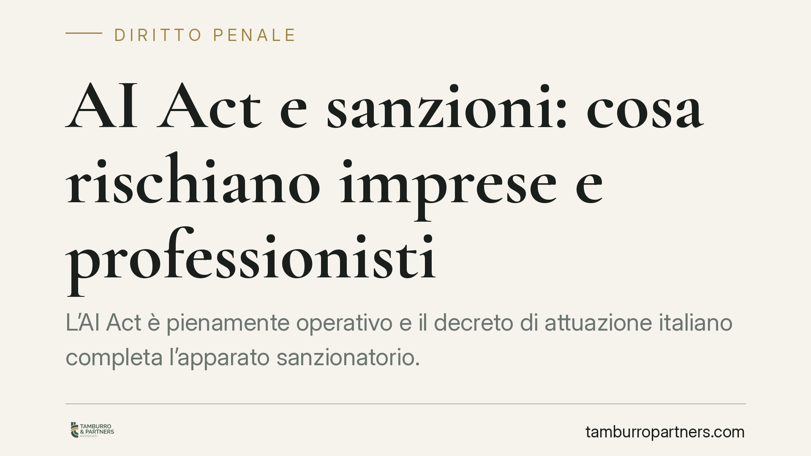

AI Act e sanzioni: cosa rischiano imprese e professionisti
L'AI Act è pienamente operativo e il decreto di attuazione italiano completa l'apparato sanzionatorio. Le violazioni espongono imprese e professionisti a sanzioni amministrative fino a 35 milioni di euro o al 7% del fatturato mondiale, oltre a misure non pecuniarie. Capire chi è fornitore e chi è deployer è il primo passo per valutare la propria esposizione.

Il quadro normativo
Il Regolamento UE 2024/1689, noto come AI Act, è la prima disciplina organica europea sull'intelligenza artificiale. Il suo impianto è direttamente applicabile negli Stati membri, con scadenze progressive di efficacia. L'apparato sanzionatorio è fissato dall'art. 99 del Regolamento, mentre spetta alla normativa interna individuare le autorità competenti e disciplinare l'irrogazione delle sanzioni.
*(Nota redazionale: il decreto di attuazione italiano e la relativa numerazione vanno confermati con la versione pubblicata in Gazzetta Ufficiale prima della diffusione.)*
Un chiarimento preliminare è doveroso. Le sanzioni previste dall'AI Act hanno natura amministrativa, non penale. L'art. 99 parla espressamente di "sanzioni amministrative pecuniarie". Questo non esclude che la medesima condotta possa intersecare fattispecie penali già esistenti nel nostro ordinamento, come vedremo più avanti.
Le soglie sanzionatorie
L'AI Act gradua le sanzioni in base alla gravità della violazione.
- Pratiche vietate (art. 5): fino a 35 milioni di euro o, se superiore, al 7% del fatturato mondiale annuo del gruppo. Rientrano qui, ad esempio, il social scoring e certi usi di identificazione biometrica.
- Altri obblighi (sistemi ad alto rischio, obblighi di trasparenza ex art. 50): fino a 15 milioni di euro o al 3% del fatturato.
- Informazioni inesatte o fuorvianti alle autorità: fino a 7,5 milioni di euro o all'1,5% del fatturato.
Il criterio è alternativo: si applica l'importo più elevato tra soglia fissa e percentuale. La percentuale si calcola sul fatturato mondiale consolidato di gruppo, non sul solo fatturato della singola entità coinvolta. Per un'impresa inserita in un gruppo multinazionale questo cambia radicalmente l'entità del rischio.
Fornitore o deployer? La distinzione decisiva
L'AI Act distingue due ruoli, con obblighi diversi.
Il fornitore sviluppa un sistema di IA o lo immette sul mercato con il proprio nome. È il caso della società che produce un software di scoring creditizio.
Il deployer utilizza il sistema nell'esercizio della propria attività. Qui rientrano la maggior parte delle imprese e dei professionisti:
- lo studio professionale che adotta un sistema di IA per analisi documentale o profilazione clienti;
- la banca che impiega un modello di valutazione del merito creditizio;
- l'azienda sanitaria che usa strumenti diagnostici basati su IA.
Anche il deployer ha obblighi propri: sorveglianza umana, verifica dei dati di input, informativa agli interessati. La responsabilità non si esaurisce in capo a chi ha costruito il sistema.
Le misure non pecuniarie
L'attenzione si concentra spesso sulle cifre, ma le misure non pecuniarie possono rivelarsi più onerose della sanzione economica.
L'ordine di rimedio può imporre la modifica o il ritiro del sistema: per un'impresa che ha costruito un processo produttivo attorno a quello strumento, l'impatto operativo è rilevante. La dichiarazione pubblica della violazione incide sulla reputazione, con effetti che non si recuperano pagando una multa.
I profili di rilevanza penale
Sebbene l'AI Act si muova sul piano amministrativo, alcuni usi illeciti di sistemi di IA possono attivare fattispecie penali già vigenti.
Il trattamento illecito di dati, in particolare di dati biometrici raccolti o elaborati senza base giuridica, può integrare il reato di cui all'art. 167 del Codice privacy (d.lgs. 196/2003). L'uso di IA per la creazione di contenuti falsi lesivi può toccare i delitti contro l'onore o la sostituzione di persona (art. 494 c.p.). La raccolta fraudolenta di dati può rilevare sotto il profilo dell'accesso abusivo a sistemi informatici (art. 615-ter c.p.).
Il rischio, in sintesi, è duplice: alla sanzione amministrativa dell'AI Act può sommarsi la responsabilità penale individuale per la condotta sottostante.
Cosa fare in concreto
- Mappate tutti i sistemi di IA utilizzati, qualificando il vostro ruolo (fornitore o deployer) per ciascuno.
- Verificate se qualche sistema rientri tra le pratiche vietate o tra quelle ad alto rischio.
- Adeguate le procedure interne: sorveglianza umana, informativa agli interessati, controllo dei dati di input.
- Documentate ogni valutazione e misura adottata: la tracciabilità è decisiva in sede di controllo.
- Rivedete i contratti con i fornitori di IA, ripartendo chiaramente responsabilità e obblighi di conformità.
Consigliamo di avviare la mappatura prima di eventuali controlli: la compliance documentata è l'unica difesa concreta.
---
*Contributo informativo a cura di Tamburro & Partners - Avv. Giuseppe Tamburro. Non costituisce parere legale.*
Ogni condominio ha una storia a sé.
Se gestisci un'amministrazione e vuoi un confronto su una specifica questione condominiale, scrivi allo studio. Ti rispondiamo entro un giorno lavorativo.